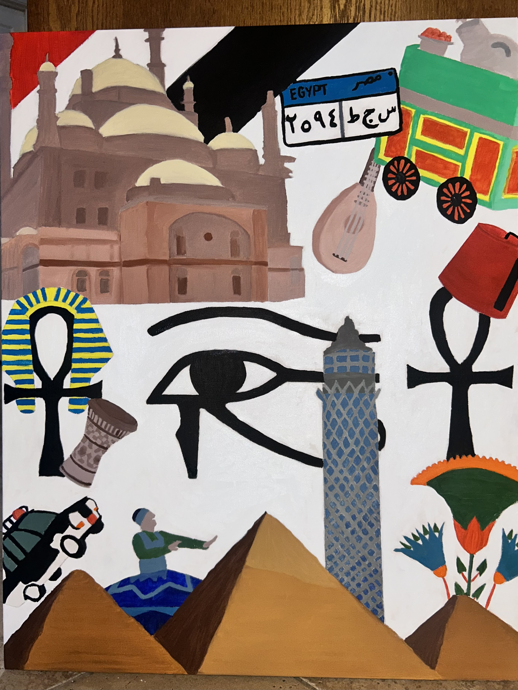

Lojayn Abouseda
I am a UTD student studying Arts Technology, and Emerging Communications. I enjoy the creative world whether through digital art, design, or drawing and paintings.
Email Me
Education
- UT Dallas
- BA in ATEC
- 2023 - Present
- Collin College
- Core Coursework
- 2024 - 2026
Skills
- Adobe Creative Suite
- Canva
- HTML / CSS
- Javascript
- Figma
- Teamwork
- Photography
- Painting
Employment
Sonic
Efficiently managed multiple customer transactions, including order taking, payment processing, and product delivery.
Leadership & Involvement
-
Islamic Relief UTD | Service Committee
Organizing community outreach and fundraising events to support global and local humanitarian efforts.
-
Applied User Experience Certificate
Completed intensive training in user-centered design, wireframing, and accessibility standards.
-
Digital Product Design Project
Acted as lead researcher for a mobile app project addressing campus food insecurity.

Egyptian Collage- Oil paintings